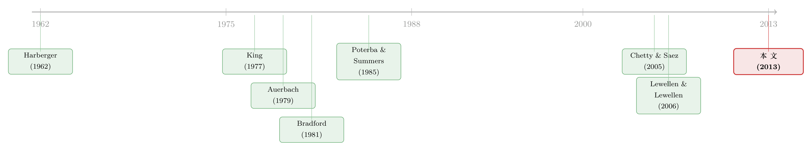

派息税没有改变投资的『总量』，却悄悄改写了它的『去向』
本文读的是 Becker, Jacob & Jacob (2013, Journal of Financial Economics)：当派息要交税时，留存收益（内部股权）就比增发股票（外部股权）便宜。于是高派息税会把投资「锁」在那些自己能造血的公司里，让有好项目却必须靠外部融资的公司投不动。作者用横跨 25 国、1990–2008 年的税收面板证明了这一点——派息税几乎不动投资的总量，却显著改变了投资在公司之间的分配。
1 一场吵了五十年、却始终没吵到点子上的争论
先讲一个看上去早该有定论、却偏偏吵了半个世纪的老问题：对公司分红征税，到底会不会压低企业投资？
这个问题之所以重要，是因为它直接关系到一国该不该减分红税、减了之后能不能刺激投资。围绕它，财政学里早早分成了针锋相对的两派。一派叫「旧观点 (old view)」——Harberger (1962)、Feldstein (1970)、Poterba and Summers (1985) 这一脉——他们假设企业的边际投资靠增发股票来融资。既然新项目的钱要从外部股权来，而股权回报最终要被分红税课走一道，那么派息税就直接抬高了资本成本，于是投资被压低。逻辑干净利落。
可另一派——「新观点 (new view)」，由 King (1977)、Auerbach (1979a)、Bradford (1981) 奠基——偏偏不同意。他们说，你凭什么假设边际投资靠增发？现实里大量投资是用留存收益 (retained earnings) 干的。而对于一家用自己利润再投资的公司，那笔钱无论是今天分掉、还是留着投了明天再分，迟早都要交同一道分红税。既然这道税是「跑不掉」的、对两种选择一视同仁，它就不会扭曲投资决策。于是新观点得出一个惊人的结论：派息税对投资根本没有影响。
注意，这两派的分歧，本质上只是对「边际投资的钱从哪来」这一个假设的分歧：旧观点说从增发来，新观点说从留存来。换个假设，结论就反了。
接着，一个自然的问题是：那到底谁对？过去几十年里，无数论文围绕「派息税 → 投资总量」这条线打转，尤其是美国 2003 年那次大减税，被 Chetty and Saez (2005)、Brown, Liang, and Weisbenner (2007) 反复用来检验分红如何回应税收。可投资比分红难测得多，单独一次税改的统计功效又有限，争论始终悬而未决。
然后，本文的三位作者——Bo Becker、Marcus Jacob、Martin Jacob——做了一件聪明的事：他们不再去争「总量」，而是把目光移到了「配置」上。
2 真正关键的一步：别问总量，问『去向』
这是全篇最值钱的一个转身，值得停下来讲透。
旧观点和新观点之所以掐了五十年，是因为它们各自只描述了一类公司——旧观点描述「只能靠外部股权」的公司，新观点描述「能靠内部留存」的公司——然后各自把这类公司的结论推广成了对整个经济的判断。可现实里，这两类公司是同时存在的。
于是作者说：与其去赌「边际企业」到底属于哪一类、然后争论总量的方向，不如直接看这两类公司之间的差异。因为派息税一旦上升，它抬高的只是外部股权的成本（旧观点公司痛），而对内部股权几乎不构成额外负担（新观点公司不痛）。两类公司的资本成本被拉开了一道楔子 (wedge)。
这就是作者反复强调的「税收楔子理论 (tax wedge theory)」：派息税在内部股权与外部股权之间打入一道楔子；税越高，楔子越宽，两类公司的投资行为就越分化。
这个视角的高明之处在于，它对模型假设的依赖反而更弱了。你不必去赌边际企业是旧观点型还是新观点型——无论哪一类，只要派息税上升，「自己能造血的公司」相对「必须找外部要钱的公司」，资本成本优势就更大，于是前者会把投资「锁」在自己手里，后者则被挤出。作者给这个现象起了个传神的名字：投资被 「锁定 (lock-in)」 在了盈利的、现金流充沛的公司里。
但真正关键的一步在于：「配置」这个落点，恰好能被一个全新的数据集干净地识别出来。 这就引出了下一节的模型，和再下一节那个跨 25 国的税收面板。
3 一个一期模型：把楔子算给你看
本文有一个简洁的一期模型（作者说它「类似但比 Lewellen and Lewellen (2006) 更简单」）。它的全部目的，就是把上面那道「楔子」用公式精确地写出来。我们一步步走。
设定。 一家公司在时点 1 有机会投入 \$1，到时点 2 收回 \(1+p\)。净收益 \(p\) 先要按公司所得税率 \(t_c\) 课税。公司在时点 2 把全部现金分给投资者，这笔派息（无论以分红还是回购形式）按派息税率 \(t_p\) 全额课税。投资者另有一个同等风险的替代投资，税后回报记为 \(r=\hat{r}(1-t_i)\)，其中 \(t_i\) 是该替代投资上的税率。
模型的全部张力，落在这家公司有没有内部资金这一个分岔上。
3.1 旧观点公司：手里没钱，必须增发
第一种情形，公司零现金，要投资就必须增发股票——这正对应旧观点的假设。它在时点 1 募到 \$1，时点 2 产出 \(1+p\)，缴完公司税后剩 \(1+p(1-t_c)\)，全额派息；投资者再缴一道派息税，到手 \(1+p(1-t_c)\,(1-t_p)\)。而替代投资能给他们 \(r\)。所以公司值得投资，当且仅当：
$$ p(1-t_c)\,(1-t_p) > r \tag{1} $$
我们把这个最核心的投资条件拆开来看每一块在干什么：
由 (1) 式可以反解出旧观点公司的资本成本（在这个无债的简单模型里，它就等于股权成本）：若要求的回报是 \(r\)，则
$$ rE = \frac{r}{1-t_p} \tag{2} $$
直觉很清楚：派息税 \(t_p\) 越高，分母 \(1-t_p\) 越小，要求的最低回报 \(rE\) 就越高——增发融资的公司，资本成本随派息税单调上升。这就是旧观点「派息税压低投资」的来源。
3.2 新观点公司：手里有钱，投与不投都要交那道税
第二种情形，公司有留存收益。它面对的是另一道选择题：是在时点 1 把这 \$1 作为（应税）分红派掉，还是留下来投进项目、到时点 2 再把税后现金流作为分红派出。如果时点 1 就派 \$1，投资者到手 \(1-t_p\)，可以拿去按 \(r\) 投资。所以公司值得投资，当且仅当：
$$ [1+p(1-t_c)]\,(1-t_p) > [1+r]\,(1-t_p) $$
请注意这一步——这是新观点的灵魂所在：等式两边都乘着同一个 \((1-t_p)\)。 无论投还是不投，这笔钱最终都要被派息税课一道，于是 \((1-t_p)\) 在不等式两边被约掉了。投资条件塌缩成：
$$ p(1-t_c) > r \tag{3} $$
派息税 \(t_p\) 消失了。于是新观点公司的资本成本是
$$ rI = r \tag{4} $$
它完全不受派息税影响，而且永远低于旧观点公司的 \(rE=r/(1-t_p)\)。这正是新观点那个「派息税不影响内部融资公司投资」的标准结论。
3.3 把两者一减，楔子就出来了
现在把 (2) 和 (4) 放在一起。作者真正要测的不是任何一类公司的绝对水平，而是两者之差 \(rI-rE\)。对它关于派息税 \(t_p\) 求导，是正的（\(rE\) 随 \(t_p\) 上升、\(rI\) 不变，所以二者之差 \(rI-rE\) 随 \(t_p\) 上升）。这就给出了全文要检验的中心命题：
假说（税收楔子理论）： 能靠留存收益自我融资的「新观点公司」与必须增发的「旧观点公司」之间，投资之差随派息税率上升而扩大。
[!note] 作者特地说明，为什么宁可检验这个「差」、也不去单独检验任一类公司：因为「差」对模型假设的稳健性更强——你不需要假定边际企业属于哪一派，只要两类公司在投资机会上系统性地不同，那么相对资本成本一变，资本的去向就会跟着变。
模型还顺手处理了三个现实顾虑，都不改变结论的方向：(i) 税基效应——若回购只对部分资本利得课税（税基比例 \(b\)，\(0\le b\le 1\)），内部股权成本变成 \(rI=r/(1-b\,t_{CG})\)，只要 \(b<1\) 仍有 \(rI
4 识别策略：把 2003 年那一次实验，复制 25 国 × 19 年
理论说得再漂亮，识别才是命门。作者面对的难处他们自己列得很坦诚：美国税法的大改动很罕见；投资本身被会计数据测得很糙（大量无形投资、品牌、人力资本压根没进资本支出）；投资又笨重、要时间落地，对税改的反应慢且难以在时间上对齐；可一旦把观察窗口拉长，又会混进商业周期的噪声。单靠一次税改，统计功效实在不够。
这正是本文方法论上的核心动机：正因为单次税改的精度低，才需要一大把税改事件。 后文我们会看到，确实有少数事件的点估计方向与假说相反——作者认为这恰恰是「投资难估计」的预期表现，而不是反例。
破局的钥匙，是 Jacob and Jacob (2012) 整理的一套国际分红与资本利得税数据集：覆盖 25 个国家、1990–2008 共 19 年，内含 15 次实质性税改和 67 次分红或资本利得税率的离散变动。有了这么多次税收变动，作者就有了足够的变异，去看投资配置如何随派息税变化。他们做了两套检验。
第一套：非参数 (nonparametric, NP) 事件检验。 聚焦那些派息税变动至少 3 个百分点的事件，比较税改前 5 年与税改后 2 年。在每个「国家-年」单元里，按现金流/资产之比把公司分成五分位，算每个分位的（滞后资产标准化后的）平均投资率。15 次减税平均降幅 9.8 个百分点（中位 5.5）；14 次加税平均升幅 8.4 个百分点（中位 5.6）。
第二套：参数化回归。 把投资对一组公司控制变量、公司固定效应、「国家-年」固定效应，以及派息税率与现金流的交互项回归。关键在于：借助面板结构，作者允许现金流的系数在不同国家、不同年份之间变化——这等于把当年那些利用美国 2003 减税做识别的研究，在 25 国 × 19 年的整个面板上复制了一遍。而为了打消「税改只是更大结构性改革的一个碎片」的内生性担忧，他们还从世界发展指标 (WDI) 里收来一批经济政策控制变量、并控制了公司所得税率及其与现金流的交互。
5 主要结果：一笔被「挪了窝」的投资
先看非参数检验。结论非常符合楔子理论：
- 加税之后，高现金流与低现金流公司的投资出现分化——两组的投资率之差从
5.33%（占资产）扩大到7.59%，上升了 42%。 - 减税之后，两组投资出现收敛——投资率之差从
7.27%缩小到5.54%，下降了 31%。
换句话说，对一次典型的大税改，一大笔投资被估计挪了窝：税一升，投资从「够不着内部股权」的公司流向「内部现金充裕」的公司；税一降，反向流动。而且 15 次减税里只有两三次、14 次加税里只有两三次，其差分方向与假说冲突；其余多数点估计都站在假说一边，且不少很大——约三分之一的减税事件，让高低现金流公司的投资率之差至少缩小了 2.5 个百分点；约 40% 的加税事件，让这道差扩大了 2.5 个百分点以上。作者还对这些逐事件的差分点估计做了符号检验：在加税（减税）后，投资率之差上升与下降并非等可能，可在 5%（1%）水平上拒绝。
再看回归。现金流 × 派息税交互项的系数一致为正且显著。量级也不小：从派息税的 25 分位（15.0%）走到 75 分位（32.2%），现金流的有效系数增加 0.029，相对 25 分位处的条件估计上升了约 33%。和非参数结果一个口径——派息税越高，投资越是往「现金流高」的地方扎堆。
作者还做了大量稳健性：换三种不同口径的税率结果相似；用净收入替代现金流仍成立；控制公司所得税及其与现金流的交互后仍成立；并验证了对现金投资、对投资机会测量误差的稳健性。最后两块拼图尤其漂亮：(i) 横截面上，他们用三种办法识别「边际资金更可能来自外部股权」的公司（预测的股权销售、历史增发、以及年龄与规模都在最低两个五分位的公司），发现只有这些「更依赖外部股权」的公司，其现金流系数才对税率敏感——这正坐实了机制；(ii) 时序上，派息税高时，股权增发量确实偏低——说明他们捕捉到的税收变异是「真」的、被企业感知到的有效税率。
6 文献脉络：从「争总量」到「看配置」
把这条线拉直来看，它的演进有一种清晰的张力。
最早，是 Harberger (1962) 奠下的旧观点：分红税抬高资本成本、压低投资。紧接着 King (1977)、Auerbach (1979a)、Bradford (1981) 提出新观点，用一个「内部留存的钱迟早都要交那道税」的论证，把派息税对投资的影响一笔勾销。两派在 1980 年代由 Poterba and Summers (1985) 等推向高潮，却谁也说服不了谁——因为他们争的始终是同一件事：投资的总量。

进入 2000 年代，实证的注意力转向美国 2003 年那次分红减税，Chetty and Saez (2005) 是这一波的代表，但他们测的主要是分红对税收的回应，投资这个更难的变量始终缺乏有力证据。理论侧，Lewellen and Lewellen (2006) 把内部股权、税收与资本结构的关系模型化，为本文那个一期模型提供了直接的脚手架。
本文 (2013) 的位置，就在这条线的一个转折点上：它不再去续写「总量」之争，而是把问题重述为配置——既然两类公司同时存在，派息税就不是简单地抬高或不抬高投资，而是在两类公司之间重新分配资本。这一转身，让一个延宕五十年的争论，第一次有了能用跨国面板干净检验的形态。
7 评论与延伸（Q&A + 研究方向）
(a) 几个可能的疑问
Q：这篇文章到底是站旧观点还是新观点？
都不站，或者说它跳出了二选一。作者的高明在于：旧观点描述的是「只能外部融资」的公司，新观点描述的是「能内部融资」的公司，两者各对一半。本文检验的是两类公司之差对派息税的敏感性，这个命题在两派假设下都成立，所以它不需要赌哪一派对。
Q：现金流和投资的相关性，本来就有很多解释（融资约束、代理问题），凭什么说这里量到的是税收楔子？
关键在那个交互项：不是现金流系数为正（这早被 Fazzari, Hubbard, and Petersen (1988)、Kaplan and Zingales (1997) 讨论烂了），而是现金流系数随派息税升高而升高，且这种敏感性只出现在「更依赖外部股权」的公司身上。纯粹的融资约束或代理故事，没有理由让这个敏感度恰好跟着各国派息税率走。
Q：税改会不会只是更大一揽子结构性改革的一部分，真正驱动投资的是别的政策？
这是最该担心的内生性。作者的应对是从 WDI 收一批经济政策控制变量、并控制公司所得税率及其与现金流的交互。在这些控制之下，派息税的效应依然「独特而显著」。当然，这只能说「在我们识别出的政策集合内」成立，无法排除所有遗漏变量。
Q：如果企业能用债务替代昂贵的股权，楔子不就被抹平了吗？
这正是 Miller-Modigliani 不成立才有故事的地方。作者承认若债务是股权的好替代，效应会被削弱；但投资型公司可能缺合格抵押品、已用满举债能力、或不愿加杠杆。他们在稳健性一节专门检验了向债务替代的相关性，结论是效应仍在。
Q：42%、31% 这些数字，是说投资总量变了这么多吗？
不是。它们说的是高、低现金流两组公司投资率之差的变化（如从 5.33% 扩大到 7.59%）。总量层面，作者反复强调他们不声称识别了对总投资的效应——他们识别的是配置。这是必须分清的一点。
Q：回购可以规避部分税，会不会让结论失效？
模型里用税基比例 \(b\) 处理了：内部股权成本是 \(rI=r/(1-b\,t_{CG})\)，只要 \(b<1\)，内部股权仍比外部便宜，结论方向不变。Miller and Scholes (1978) 曾论证派息税可被完全规避——若真如此结论会消失，但美国国库同时从分红税和资本利得税收到可观税款，说明实践中投资者并不能完全规避。
(b) 几个可能的研究问题与提案
1. 派息税楔子在公司债/信用市场的镜像。 【经济故事】本文讲股权的内外之别；可债务也有「内部 vs 外部」的成本差。派息税抬高外部股权成本时，被挤出的旧观点公司是否转而多发债、抬高了信用市场的供给与利差？这把楔子理论延伸到了信用配置。 【可行性】中。需把本文的国际税收面板与 Mergent FISD / Refinitiv 之类的公司债发行数据匹配，识别仍可借「国家-年」固定效应 + 税改事件，难点是各国债市深度差异大、可比性弱。
2. 外资持有人会改变派息税的「锁定」强度吗？ 【经济故事】楔子的大小取决于「边际投资者」的税负。若一家公司的股东以外国投资者为主，其面对的有效派息税与本国税率脱钩，锁定效应应当被稀释。这把派息税配置效应与所有权结构连在一起。 【可行性】中。需 FactSet / Orbis 的跨国机构持股数据按国别拆分；识别上可在本文回归里加「外资持股 × 派息税 × 现金流」三重交互。（关于外资持有人的长期效应，可参见《外资真是「蝗虫」吗？——一次跨 30 国的长期投资体检》。）
3. 用更干净的个人税自然实验复核楔子。 【经济故事】本文的有效税率是国家层面的，跨国比较难免混入制度差异。能否找一个同一市场内、只有部分投资者税负变化的实验，把楔子识别得更干净？ 【可行性】高。文献里已有这类设计的先例——例如基于伦敦 AIM 个人税差异的研究（见《个人税，悄悄定价了你的股票——一个来自伦敦 AIM 的干净实验》）。把投资配置作为结果变量重做一遍是自然的下一步。
4. 锁定效应的「产业固化」后果。 【经济故事】作者推测高派息税可能偏袒「已建立的产业」（established industries），因为成熟公司现金流足、被锁定的恰是它们的投资。那么长期看，高派息税国家的产业结构是否更僵化、新兴产业的资本形成是否更慢？ 【可行性】低到中。需要长面板和产业层面的进入/退出数据，识别产业固化对单一国家很难，跨国比较又易受太多混杂因素影响，doable 但说服力存疑。
8 我的判断
这篇文章最大的贡献，是一次问题重述：它把「派息税影不影响投资」这个争了五十年、却因为盯着「总量」而始终僵持的问题，改写成「派息税如何重新分配投资」，并且证明在配置这个维度上，证据出奇地清楚、量级出奇地大。模型简洁、机制透明，三块拼图（横截面只在外部股权依赖型公司里显著、时序上高税伴随低增发）把因果链补得相当完整。
对识别，我仍有两点保留。其一，正如作者自己反复声明的，「总量」与「配置」必须分清——本文识别的是相对配置，任何把它读成「派息税不影响总投资」的结论都是过度引申；一般均衡下，被挤出的旧观点公司减少的投资，可能通过资本、产品、劳动力市场转嫁给新观点公司，净效应并不在本文射程之内。其二，投资被会计数据测得很糙这一点，作者诚实地承认了，但无形投资的系统性缺失究竟把效应低估还是高估了，仍是个悬念。
后续我最想看到的，是把这道楔子接到信用市场和外资持有人两条线上去——前者检验被挤出的股权融资是否转化成了债务供给的压力，后者检验当边际投资者的税负与本国税率脱钩时，锁定效应会不会被稀释。这两个方向，都能把本文这个漂亮的「配置」视角，推到它还没走到的地方。
参考文献
Auerbach, A.J. (1979a). Wealth maximization and the cost of capital. Quarterly Journal of Economics 93, 433–446.
Becker, B., Jacob, M., Jacob, M. (2013). Payout taxes and the allocation of investment. Journal of Financial Economics 107(1), 1–24.
Bradford, D.F. (1981). The incidence and allocation effects of a tax on corporate distributions. Journal of Public Economics 15, 1–22.
Brown, J.R., Liang, N., Weisbenner, S. (2007). Executive financial incentives and payout policy: firm responses to the 2003 dividend tax cut. Journal of Finance 62, 1935–1965.
Chetty, R., Saez, E. (2005). Dividend taxes and corporate behavior: evidence from the 2003 dividend tax cut. Quarterly Journal of Economics 120, 791–833.
Fazzari, S.M., Hubbard, R.G., Petersen, B.C. (1988). Financing constraints and corporate investment. Brookings Papers on Economic Activity 1, 141–195.
Harberger, A.C. (1962). The incidence of the corporation income tax. Journal of Political Economy 70, 215–240.
Kaplan, S.N., Zingales, L. (1997). Do investment-cash flow sensitivities provide useful measures of financing constraints? Quarterly Journal of Economics 112, 169–215.
King, M.A. (1977). Public Policy and the Corporation. Chapman and Hall, London.
Lewellen, J., Lewellen, K. (2006). Internal equity, taxes, and capital structure. Unpublished working paper, Dartmouth College.
Miller, M.H., Scholes, M.S. (1978). Dividends and taxes. Journal of Financial Economics 6, 333–364.
Poterba, J.M., Summers, L.H. (1985). The economic effects of dividend taxation. In: Altman, E., Subrahmanyam, M. (Eds.), Recent Advances in Corporate Finance, Dow Jones-Irwin, Homewood, IL, pp. 227–284.